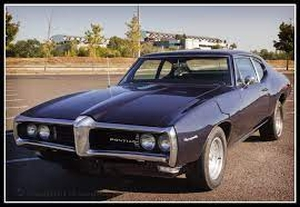
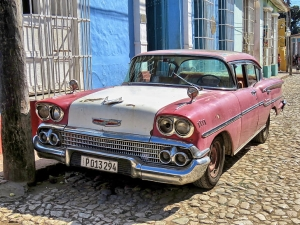
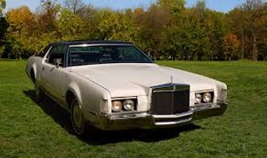

Pontiac Tempest 2
Pontiac Tempest 2 1964-1967 közöztt gyártották ez volt a második generációja a Pontiac Tempest 2-nek. A változatok egészen 3.5 literes 140 lóerős motortól mentek 6.4 literes 360 lóerős motorig. Szinte minden egyes évben egy különböző motorral látták el. Az autót kétszemélyre terveztek. A meghajtásból is rengeteg különböző volt mind automata mind manualis is volt
Chevrolet Impala
Az autó elsődlegesen 1961-1969 között gyártották majd három évtizeddel késöbb 1994-1996 között újra gyártásra került. eredetileg egy 6,7 literes 360 lóerős v8 as motorral adták viszont 1965-től már két másik változatot keztek el adni 325 lóerővel vagy 425-tel a fogyasztása pedig 6,5 literes lett
LincolnMark Iv
Az autó 1972-1976 között készült egy kétszemélyes luxus autó ként. A járművet v8 as motorral gyártották 360 ló erővel és 7,5 literes fogyasztással.